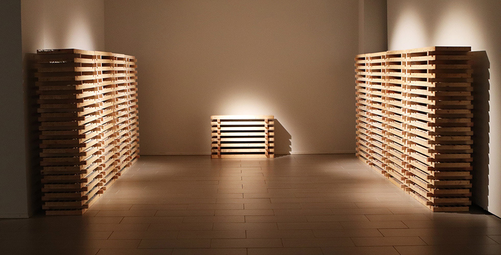
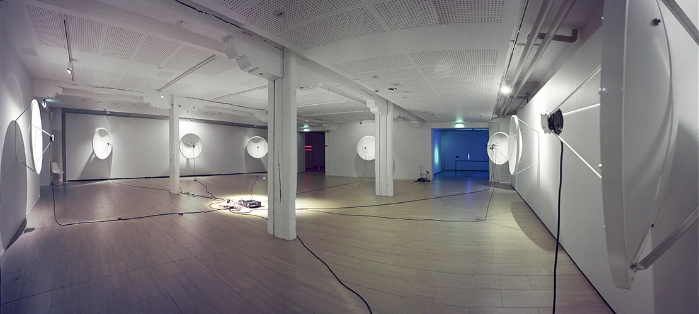
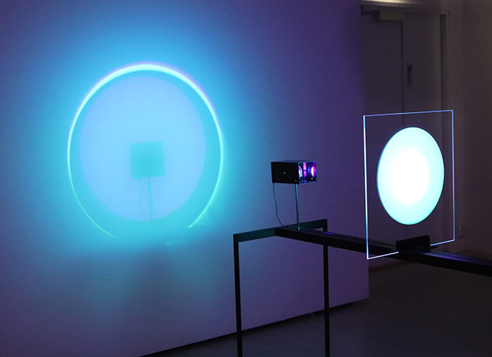
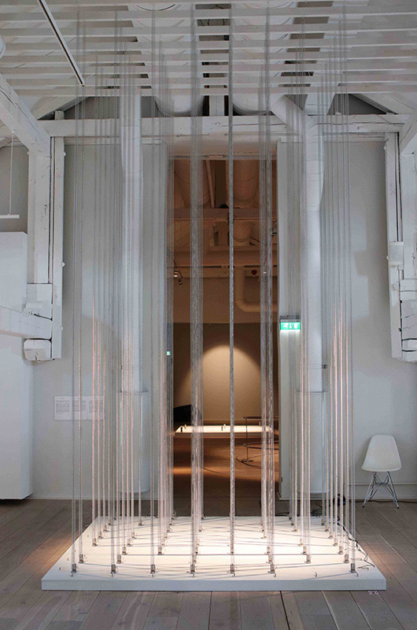
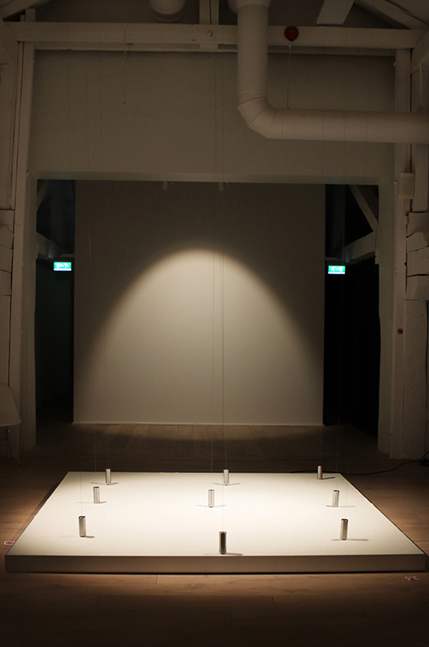

Kuntsi Museum of Modern Art, Vaasa
2018
Time Zones, Plane, Beat Frequency, Espoo Underground, 24 hours, Feedback Installation, 125 Liters of Infinity,
Led Installation, Värisuora/Color Mixer, Perspective Study 3, Large Movement 1, Perspective Studies, Solar
Incidences, Liquid Diagram, Vertical Lines in White 5&6, Lines & Circles, Spring Field, Ciclón, Variator,
Arranged Randomness 3
Third version of artists mid-career retrospective exhibition Grey Area was presented in Kuntsi Museum of
Modern Art in Vaasa. The museum space in former customs building from 19th century, situated in the harbor
just next to the sea, offered different setting for the exhibition compared to the two previous ones. Because
of this, also the selection of works presented was different. One of the new works was a new digitalized
version of Feedback Installation, which had not been shown anywhere since Museum of Modern Art in Oxford in
2000.
Beat Frequency

Espoo Underground

Feedback Installation

Color Mixer

Spring Field

Variator